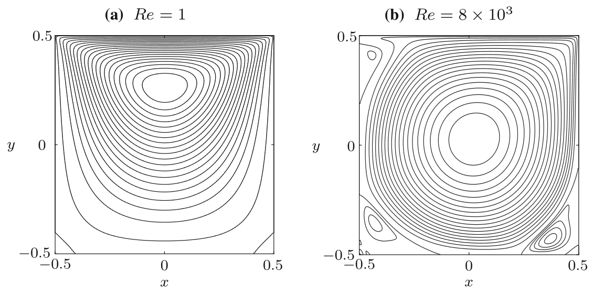
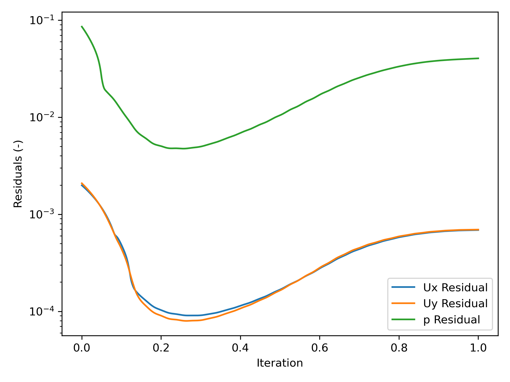
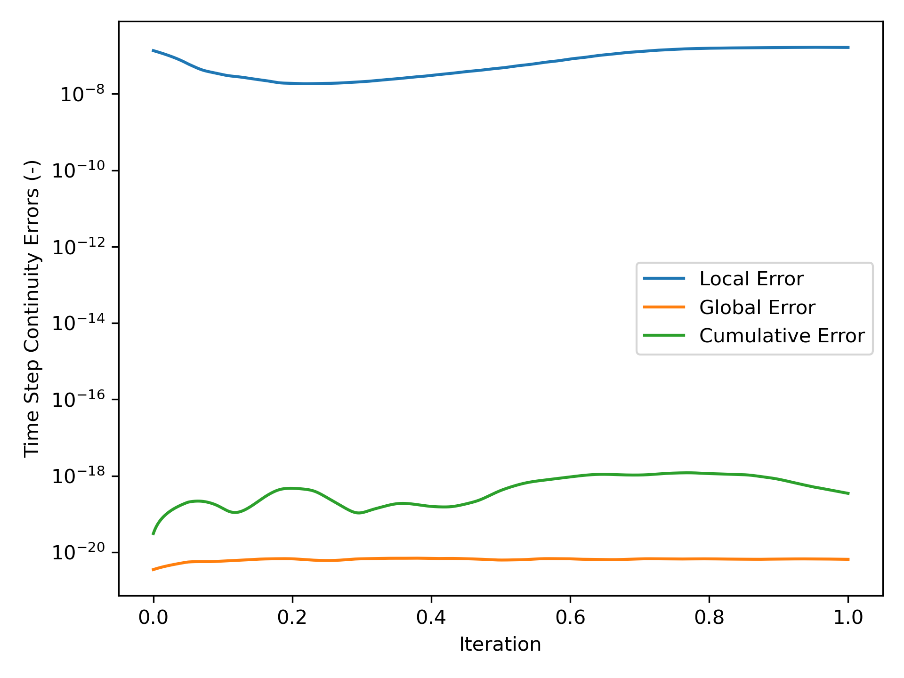

Lid-Driven Cavity Using OpenFOAM
Category(s): CFD Engineering






Project Overview
The case is a two-dimensional (2D) lid-driven cavity. The geometry is a 2D 0.1 m by 0.1 m (γ = Lx/Ly = 1) cavity space with the upper wall moving to the positive x-axis direction at certain velocities. The boundary of right, left, and lower wall is stationary. The fluid is air with kinematic viscosity (ν) of 1 x 10-5 m²/s.
The objective of this preliminary study is to understand the effect of Reynolds number (Re) on the air flow inside the lid-driven cavity, particularly the flow profile. Also, the study is a reproduction of the study conducted by Hendrik C. Kuhlmann et. al. [1]. At certain velocity, is it laminar, transitional, or turbulent? At what Reynolds number does the change occurs?
where:
Re = Reynolds number (-)
rho = fluid density (kg/m³)
U = inlet velocity = upper wall velocity (m/s)
L = characteristic length = wall length = 0.1 m
mu = dynamic viscosity (kg/m-s)
nu = kinematic viscosity = 1 x 10-5 m²/s
Reynolds number can be calculated using the Eq. (1). The Reynolds number was varied by changing the wall velocity. Here, the upper wall velocity is varied from 0.0001 m/s to 0.8 m/s with various increment. The wall velocity variation is presented at the table below.
| U (m/s) | Re (-) |
|---|---|
| 0.0001 | 1 |
| 0.01 | 100 |
| 0.02 | 200 |
| 0.03 | 300 |
| 0.04 | 400 |
| 0.05 | 500 |
| 0.1 | 1000 |
| 0.2 | 2000 |
| 0.3 | 3000 |
| 0.8 | 8000 |
I used the open-source CFD software OpenFOAM for this study with simpleFoam solver for both laminar and turbulent flow, with the latter using the k-Omega turbulence model. The flow was assumed to be steady-state. A 50 by 50 hexahedral grid mesh was used in the model, where the z-axis was set to 1 cell to represent the 2 dimensional case.
First, the simulation was validated by comparing the case with U = 0.0001 m/s and U = 0.8 m/s, hence the Re are 1 and 8000, respectively, with the case from a study conducted by Hendriketal [1], also with the same Re. The fluid flow with the isolines (streamlines) from both simulation and reference [1] can be seen in the Fig. 1 and Fig. 2 below. It can be seen that the results generated by our simulations is the same as the results obtained from [1].
The flow with Re = 1 is laminar and almost vertically symmetrical and the flow with Re = 8000 is turbulent with 3 secondary eddies in the 3 corners of the cavity.
Next, the parameter of U was varied from 0.01 m/s to 0.3 m/s with simpleFoam laminar model as per Table 1, and look at the flow profile of the cavity. The isolines can be seen at Fig. 3 to Fig. 10.
Convergence of the Re = 8000 flow can be observed from simulation's variables residuals and the time-step continuity error graphs below. This graph is created using the openFoamEvaluation script.
The case files are available in the repository.
Reference:
[1] H. C. Kuhlmann and F. Romanò, "The Lid-Driven Cavity," ''Computational Methods in Applied Sciences'', vol. 50, 2019. https://doi.org/10.1007/978-3-319-91494-7_8